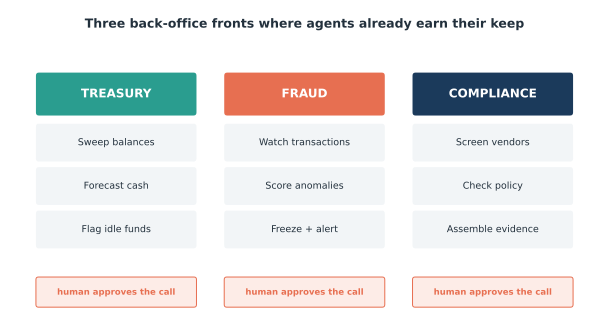
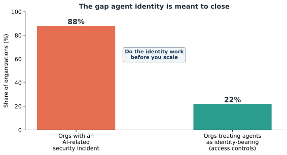

Issue 6 — Agents in treasury, fraud, and compliance
Rina works in our treasury and controls function, and she tells this story better than I do. One night, a payment ran that didn't fit any normal pattern — odd amount, unusual beneficiary, a time of day no one on her team is at a desk. In the old world, that transaction would have sat quietly until someone happened to review the log days later. Instead, an agent watching the transaction stream scored it as anomalous, held it, and sent an alert. By the time Rina had coffee, the flag was waiting — with the reasoning attached.

That's three different back-office jobs in one small story, and agents are quietly reshaping all of them (Figure 6.1). In treasury, agents sweep balances, forecast cash, and flag idle funds. In fraud, they watch transactions, score anomalies, and freeze-and-alert. In compliance, they screen vendors, check activity against policy, and assemble the evidence an auditor will ask for. Different fronts, same pattern — our line, again: a chatbot answers; an agent acts.
But here's what Rina checked before she trusted any of it: the agent held and alerted — it did not unilaterally reverse the payment. The decision to release or block stayed with a human. In every one of these domains, the agent does the watching and the assembling; a person approves the call.

That safeguard matters more here than anywhere, because these jobs touch money movement and regulators. Which is why the least glamorous part is the most important: agent identity. Every agent gets its own scoped credentials — access to exactly what it needs and nothing more — and every action it takes is logged. When Rina reviewed the night's flag, she could see precisely what the agent looked at, why it scored the payment as it did, and that it hadn't touched anything it shouldn't. That's not a black box making midnight decisions. That's a tireless night-shift analyst that always shows its work and always asks before acting.
The reassurance I'd offer anyone in these functions: agents don't replace the judgment that makes you good at this. The instinct for what smells wrong, the read on which vendor answer is evasive, the call on whether to hold a payment — those stay yours. What changes is that you're no longer the one who has to be awake at 2 a.m. to catch it. The watching scales; the deciding stays human.
Sources
- accelirate.com — ~88% of orgs had an AI-related security incident; ~22% treat agents as identity-bearing.
- kore.ai; Generative, Inc. (2026) — "a chatbot answers; an agent acts."